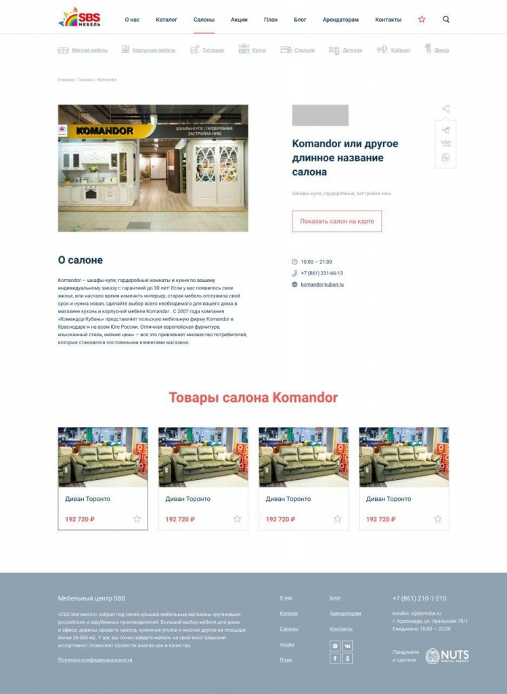
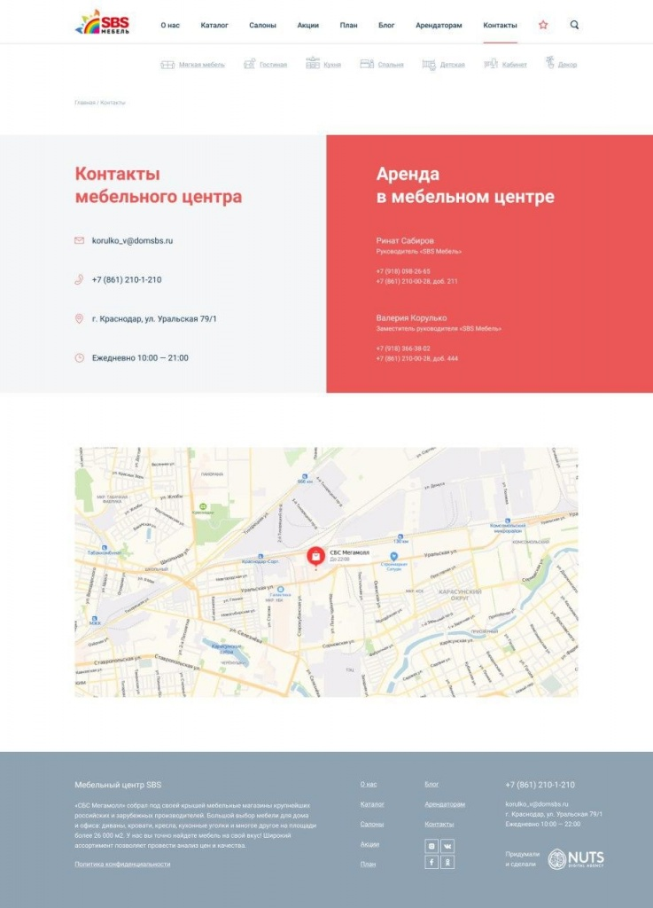
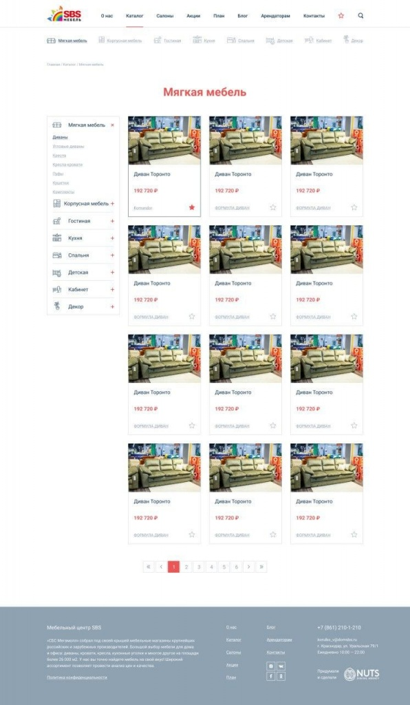

О проекте
День релиза — праздничный день для всех участников проекта. Но это совсем не значит, что стоит расслабиться и опустить руки. Напротив, все только начинается: наступает время обкатки сайта, продвижения, интенсивной контентной работы, изучения обратной связи от пользователей и новых задач, больших и маленьких. Развитие продуктов, которые не созданы по принципу «чтобы были», не останавливается.
Более того, регулярно приходит понимание новых возможностей, узких мест и новых потребностей бизнеса и рынка. В такие моменты принимается волевое решение о полной переработке продукта на основе полученного опыта.
Клиент
«СБС Мебель» — один из крупнейших и опытных мебельных центров Краснодара. Более 30 лет радует краснодарцев особым вниманием к интерьеру.
На территории 45 000 квадратных метров найдется мебель под любую дизайнерскую задачу: 17 салонов кухонной мебели российских и международных брендов от премиальных до демократичных, 19 подиумов признанных экспертов в мягкой мебели, 2 гипермаркета строительных материалов и товаров для дома, LEROY MERLIN и HOFF, и многое другое.
Позиция мебельного центра «СБС Мебель» проста, понятна, приятна и покупателю, и дизайнеру: понимание потребностей клиента, внимательный подбор лучших салонов и возможность широчайшего выбора без длительных путешествий.
Первый сайт
Два года назад мы разработали первую версию сайта. Особой потребности в функциональном сайте у бизнеса не было. Мы в сжатые сроки реализовали каталог товаров, несколько текстовых страниц, контакты со схемой проезда, и перевели сайт на поддержку.
Через пару лет наблюдений и пару месяцев поискового продвижения были выявлены некоторые проблемы.
Проблемы
низкая полезность сайта для конечного покупателя и дизайнера — можно ознакомиться с товаром, но поделиться ссылкой, добавить его в избранное для дальнейшей сортировки и сохранения нельзя.
реализация каталога через фильтрацию общего списка всех товаров мешает поисковому продвижению: есть сложности с созданием и работой над основными посадочными страницами, например, «Мебель в гостиную» или «Диваны для кухни».
визуально сайт сильно отстаёт от конкурентов, требуется дизайн и интерфейс «освежить», сделать красивее и удобнее.
нет интерактивной карты мебельного центра и возможности перейти со страницы на арендатора к его расположению на карте. Поиска по 80+ салонам тоже нет.
совсем не отработан путь «понравился товар — посмотрел похожие», пользователю приходится возвращаться к списку товаров для перехода к следующему.
плохо проработана страница о самом мебельном центре, не доносит опыт, миссию, позицию и преимущества компании.
страница «Арендаторам» не собирает лиды потенциальных арендаторов, лишь доносит информацию о том, как начать сотрудничество, и контакты менеджера.
Цель
Разработать новую версию сайта «СБС Мебель», более красивую, удобную и полезную для бизнеса и покупателя.
Задачи
1) увеличить полезность сайта для покупателей и дизайнеров
2) грамотно презентовать мебельный центр арендаторам и покупателям, собирать заявки на аренду с помощью сайта
3) устранить проблемы, мешающие поисковому продвижению
4) сделать дизайн сайта более современным и свежим
Подготовка
Взяли все критичные задачи из общего бэклога, известные нам проблемы, просьбы SEO-специалиста, результаты конкурентного анализа, обсудили с клиентом, составили список страниц, их элементов и требований.
Прототип
Этот этап пропустили по нескольким причинам.
Во-первых, задачи для дизайнера поставлены были максимально подробно, да и сам он был плотно погружен как в поддержку текущего сайта, так и в разработку требований к новой версии.
Во-вторых, уровень доверия между NUTS Digital и «СБС Мебель» давно достиг максимального уровня: мы можем уверенно моделировать обратную связь клиента и хорошо чувствуем, что можно, а что нельзя. Клиент, в свою очередь, полагается на нашу экспертность и уверен в качестве результата нашей работы.
В общем, риск «вообще не то, все переделываем» был минимальным, и мы решили ускориться.
В очередной раз напомним: пропускать прототип строго не рекомендуется, но если вы уверены, что все будет хорошо в конкретном проекте и без визуального проектирования, можно попробовать. Будьте готовы — подобный опыт может получиться негативным. Мы предупреждали :-)
Дизайн и верстка
Макеты разрабатывали, используя принцип атомарного дизайна, от простого к сложному. Сперва создаем необходимые элементы — атомы. После соединяем их в молекулы, сочетание нескольких атомов. Из нескольких молекул, объединенных одной задачей, получается организм.
После дизайнер собирает шаблоны страниц на основе уже разработанных элементов. Наполняем шаблон контентом — страница готова!
У такого подхода есть несколько весомых преимуществ:
Нет графического мусора. В первую очередь дизайнер использует уже созданные атомы и молекулы, и создает новые только при реальной необходимости. В результате на сайте не будет двух разных превью товара, или трех разных кнопок с одинаковым поведением.
Быстрая сборка макетов, возможность не отрисовывать адаптивную версию страниц. Достаточно подготовить атомы и молекулы таким образом, чтобы их внешний вид не зависел от ширины страницы, и разработать адаптивные атомы для основного шаблона (обычно это шапка и подвал сайта, фильтр, различные меню и т.п.)
Простота верстки страниц, особенно по методологии Яндекса БЭМ.
- Удобство поддержки и изменения сайта. Клиент предложил кнопку поярче? Без проблем, меняем атом и показываем результат. Не нравится шрифт? За 15 минут готовим версию с парой-тройкой других шрифтов, чтобы сравнить как следует.
В общем, настоятельно рекомендуем атомарный дизайн к ознакомлению и освоению всем причастным к веб-разработке.
Дизайн прошли за неделю, вёрстку завершили через 4 дня.
Сборка и функции
Сайт собран на Laravel, контент и SEO-параметры управляются с помощью OctoberCMS.
Структуру каталога сделали классическую, с разделами в соответствии с товарной матрицей мебели и семантическим ядром для поискового продвижения. Эту же структуру использовали в списке салонов для тех, кто начинает свой поиск с надежного производителя. Тем, кто ищет конкретный салон, пригодится поиск по салонам.
Обновили страницу товара и салона: добавили возможность поделиться ссылкой, внедрили демонстрацию похожей мебели и товаров арендатора соответственно.
Добавили интерактивный план «СБС мебель» и возможность перехода к конкретному салону на карте со страницы арендатора.
Переработали поиск: он ищет по товарам, салонам и акциям, выдача переключается с помощью вкладок.
Разработали избранное с возможностью добавлять товар как из списков, так и с карточки товара. Избранным можно поделиться через Вконтакте и мессенджеры, или отправить ссылку на почту.
Избавились от безвыходных состояний: безрезультатный поиск, пустое избранное предлагают товары, в акциях, помимо условий, есть конкретный товар. 404 страница предлагает вернуться в каталог или воспользоваться поиском
Сделали форму для потенциальных арендаторов и отправку её содержимого на email менеджеру.
Проработали совместно с клиентом страницу «О нас» для правильной и полной презентации мебельного центра.
На сборку сайта ушло 4 дня, еще пару дней потратили на тестирование и отладку.



Результат
Новый сайт «СБС мебель», полезный для предварительного подбора мебели покупателем и дизайнером интерьера, с проработанными посадочными страницами, всем необходимым для поискового продвижения и с большим запасом «прочности» для дальнейшего развития.
Мы продолжаем работу над проектом в рамках поддержки.
Вас, читатели, ждём на sbsmebel.com